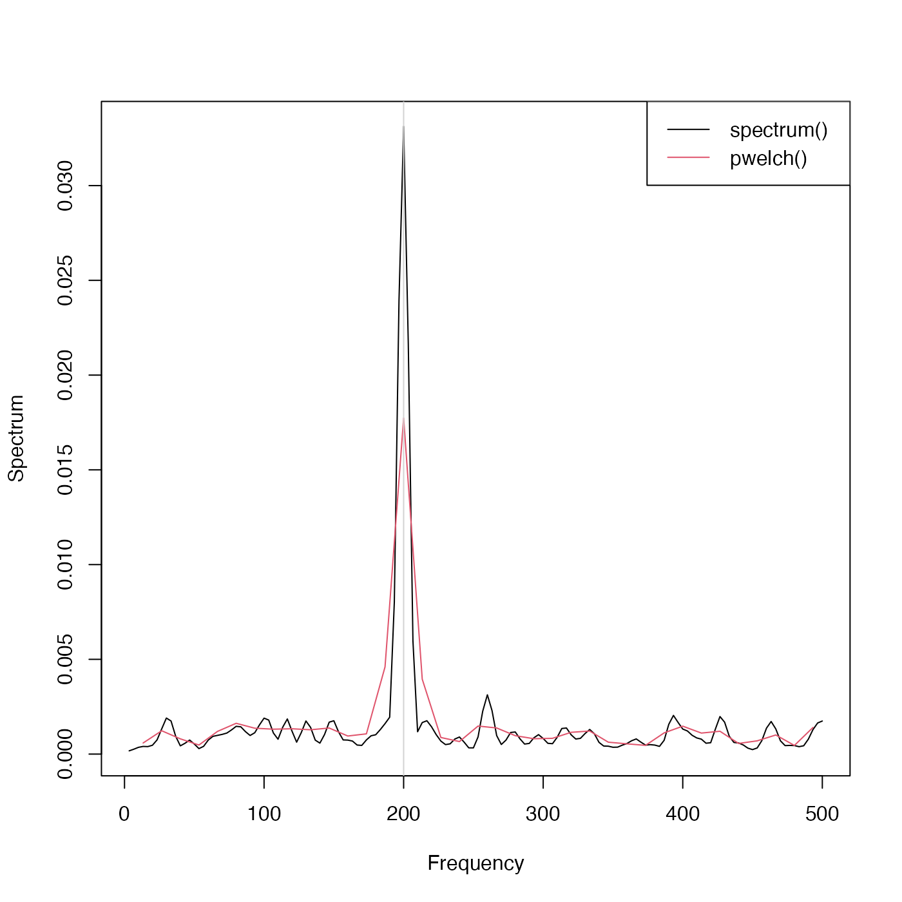

Compute periodogram using the Welch (1967) method. This function is somewhat analogous to the Matlab function of the same name, but it is not intended as a drop-in replacement. Please see the ‘Arguments’ and ‘Details’ to learn about the complex interactions of the controlling parameters.
Usage
pwelch(
x,
window,
noverlap,
nfft,
fs,
spec,
demean = FALSE,
detrend = TRUE,
plot = TRUE,
debug = getOption("oceDebug"),
...
)Arguments
- x
a vector or timeseries to be analyzed. If
xis a timeseries, then it there is no need tofs, and doing so will result in an error if it does not match the value inferred fromx.- window
optional value that can have several meanings. CASE 1: If
windowis a single integer, then that is taken as the number of fragments into whichxis subdivided. In this case, a Hamming window, of lengthlength(x)/window, is constructed usingmakeFilter()with itsnormalizeandasKernelarguments both set to FALSE. This filter is then multiplied elementwise with thexvalues in the subdivision. CASE 2: ifwindowis a numeric vector of length exceeding 1, then the values are taken to be a filter to be applied to the subset ofx, and thus the length ofwindowand the value ofnfftmust be equal, if both are supplied.- noverlap
number of points to overlap between the subdivisions of
x. If this is not provided, a value equal to half the subset length will be used.- nfft
length of the FFT, i.e. length of the desired subsets of
x. This argument works together with thewindowargument; see the documention on the latter to learn more.- fs
numeric value indicating the sampling frequency for
x. Ifxis already a time-series object, thenfsmust match its frequency, or an error is reported.- spec
optional function to be used, in conjunction with
nfft, to control the computation of the spectra in the subdivided time-series. The purpose is to allow fine-grained control of the processing, mainly for use by experts. If provided,specmust accept a time-series as its first argument, along with optional other arguments that are passed through as the...argument. The return value fromspecmust be a list or data frame containing the spectrum in an element namedspecand the frequency in an element namedfreq. Note that an error will be reported ifwindowis provided in addition tospecandnfft. This is becausepwelch()automatically constructs a (Hamming) window and multiplies it into each subset ofx. Also, note that the values ofdemeananddetrendare ignored ifspecis provided; it's up to the user to decide on these things and to handle them withinspec().- demean, detrend
logical values that can control the spectrum calculation, but only if
specis not provided. These are passed tospectrum()and thence tospec.pgram(); see the help pages for the latter for an explanation.- plot
logical, set to
TRUEto plot the spectrum.- debug
a flag that turns on debugging. Set to 1 to get a moderate amount of debugging information, or to 2 to get more.
- ...
optional extra arguments to be passed to
spectrum(), or tospec, if the latter is given.
Value
pwelch returns a list mimicking the return value from spectrum(),
containing frequency freq, spectral power spec, degrees of freedom df,
bandwidth bandwidth, etc.
Details
The gist of the pwelch() behaviour is not too difficult to explain: x is
broken up into subdivisions, spectral analysis is done on each, and the
results are averaged to get a return value.
However, things get complicated in practice. This is because there are several interlocking parameters that control both the subdivision stage and the spectral stage. The goal is to at least roughly mimic the Matlab function, so the parameter names and how they are interpreted are dictated to some extent by how things work in the Matlab code.
The parameters window, noverlap and nfft control the subdivision
behaviour. The parameters fs, spec, demean and detrend control the
spectral-analysis behaviour. Users who find the documention on these things
to be confusing may want to examine the code to see what is actually being
done. If they see problems, they are asked to post issues on the oce github
website.
Bugs
Both bandwidth and degrees of freedom are just copied from the values for one of the chunk spectra, and are thus incorrect. That means the cross indicated on the graph is also incorrect.
Historical notes
2021-06-26: Until this date,
pwelch()passed the subsampled timeseries portions throughdetrend()before applying the window. This practice was dropped because it could lead to over-estimates of low frequency energy (as noticed by Holger Foysi of the University of Siegen), perhaps becausedetrend()considers only endpoints and therefore can yield inaccurate trend estimates. In a related change,demeananddetrendwere added as formal arguments, to avoid users having to trace the documentation forspectrum()and thenspec.pgram(), to learn how to remove means and trends from data. For more control, thespecargument was added to let users sidestepspectrum()entirely, by providing their own spectral computation functions.2025-07-04: until this date, there was an error in supplying
nffttogether withspec(it is issue 2299 on the github website). This issued an error message that resulted from the fact that it was not permitted to supplywindowin that case. To address the problem, whilst retaining the requirement thatwindownot be supplied,pwelch()was changed so that it constructs a window automatically. (In the future,pwelch()may be modified to acceptwindow=FALSE, in which case no windowing will be done here, leaving it up to the user to decide whether to do windowing in the user-suppliedspec()function.)
References
Welch, P. D., 1967. The Use of Fast Fourier Transform for the Estimation of Power Spectra: A Method Based on Time Averaging Over Short, Modified Periodograms. IEEE Transactions on Audio Electroacoustics, AU-15, 70–73.
Examples
library(oce)
Fs <- 1000
t <- seq(0, 0.296, 1 / Fs)
x <- cos(2 * pi * t * 200) + rnorm(n = length(t))
X <- ts(x, frequency = Fs)
s <- spectrum(X, spans = c(3, 2), log = "no", plot = FALSE)
plot(s$freq, s$spec, type = "l", xlab = "Frequency", ylab = "Spectrum")
w <- pwelch(X, plot = FALSE)
#> Warning: increased m from 74 to 75, to make it an odd number
lines(w$freq, w$spec, col = 2)
abline(v = 200, col = "lightgray")
legend("topright", bg = "white", lwd = 1, col = 1:2, legend = c("spectrum()", "pwelch()"))
